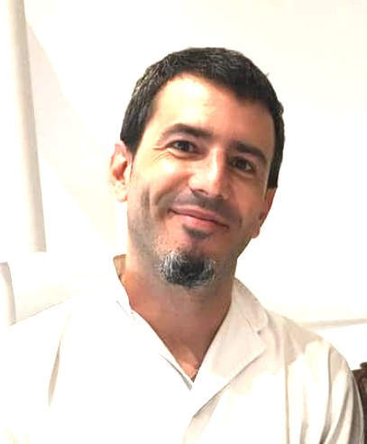

Dentista a domicilio
Para personas mayores o con movilidad reducida. Llevo el equipo portátil a tu casa y realizo revisiones, limpiezas y cuidado de prótesis con plenas garantías de seguridad e higiene.
No soy el primero en hacerlo, pero quiero impulsarlo porque facilita muchísimo el acceso a la salud bucodental cuando desplazarse es complicado.
Consultar disponibilidad por WhatsApp
¿Para quién es este servicio?
Personas mayores
Que viven solas o con familiares y a quienes ir a la clínica supone un esfuerzo importante.
Movilidad reducida
Personas con discapacidad o en silla de ruedas que encuentran barreras en los desplazamientos.
Recuperación en casa
Pacientes convalecientes o con enfermedades crónicas que requieren atención en su domicilio.

Qué hago en tu domicilio
- Revisión bucodental completa con recomendaciones claras.
- Limpieza profesional con equipo portátil ultrasonidos.
- Ajuste y reparación de prótesis y dentaduras.
- Aplicación de flúor y tratamientos preventivos.
- Extracción de piezas cuando es posible sin clínica.
- Guía de cuidados para familiares o cuidadores.
Nota: cirugía, endodoncia y tratamientos complejos requieren clínica. Si fuera necesario, te acompaño en ese proceso.
Cómo funciona
Me cuentas el caso y resuelvo todas las dudas. Sin compromiso.
Buscamos el momento que mejor le venga al paciente.
Preparo el espacio, respeto la intimidad y realizo el tratamiento.
Explico qué hacer después y resuelvo dudas de familiares o cuidadores.
¿Tienes a alguien que necesita al dentista en casa?
Escríbeme y cuéntame el caso. Sin compromiso y sin esperas.
Escribir por WhatsAppPreguntas frecuentes
¿Cuánto dura la visita?
Entre 30 y 60 minutos, según las necesidades del paciente.
¿Qué necesito preparar en casa?
Una mesa o silla cómoda, un enchufe cercano y buena iluminación. Yo llevo todo el material y las protecciones necesarias.
¿Hacéis radiografías en casa?
No llevo equipo de radiografía panorámica o CBCT a domicilio. Si fuera necesario, derivamos a clínica para las pruebas y continuamos el tratamiento en casa.
¿Hay suplemento por desplazamiento?
Depende de la distancia desde Tarragona. Lo concretamos por WhatsApp antes de reservar, sin sorpresas.
¿Atendéis fuera de Cataluña?
Sí, bajo consulta previa. La disponibilidad y el coste del desplazamiento se acuerdan antes de la visita.
¿Es seguro para pacientes con enfermedades crónicas?
Sí. Antes de la visita me informas del historial médico y adaptamos el protocolo. Llevo material de emergencia básico y valoro cada caso individualmente.